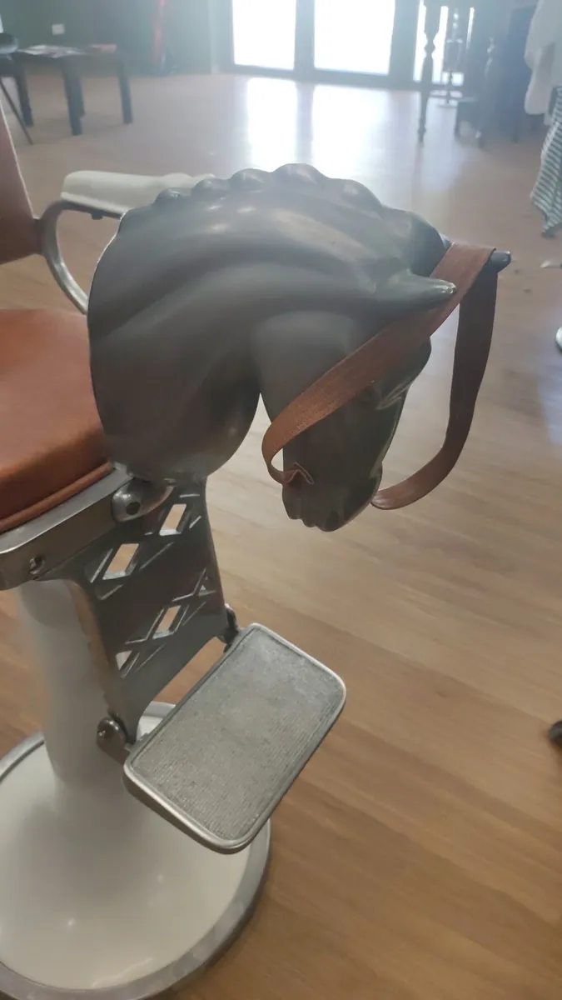
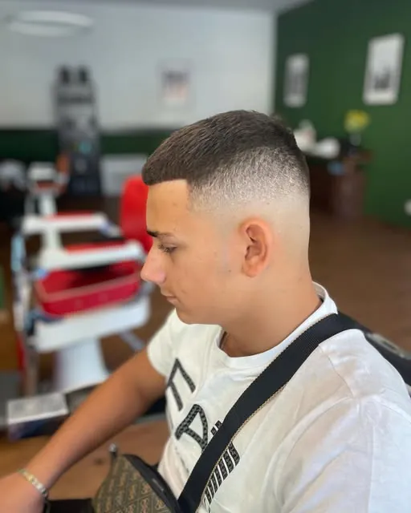
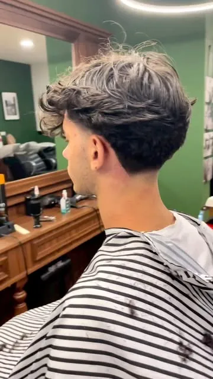
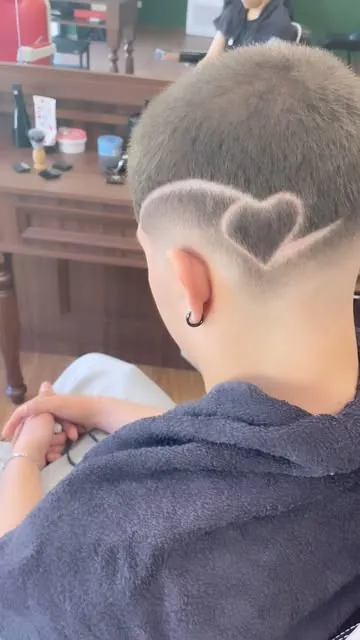
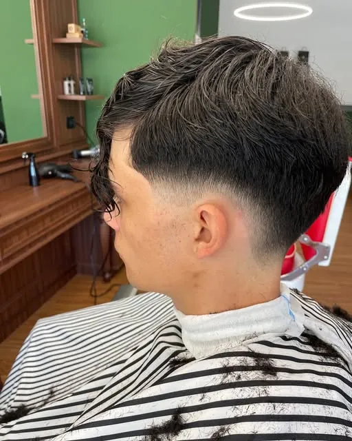
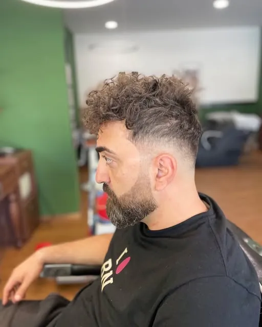
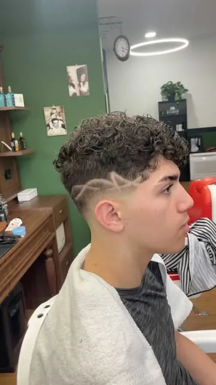
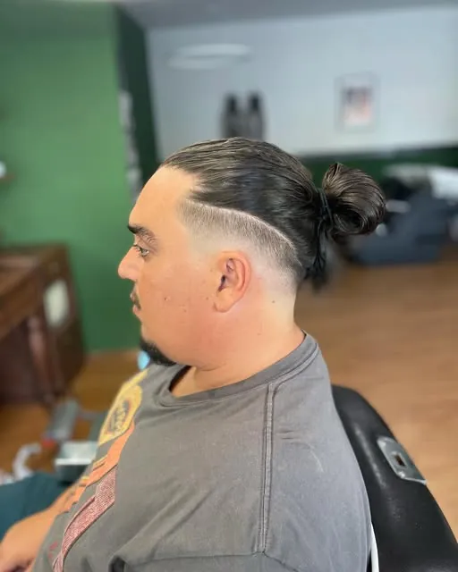
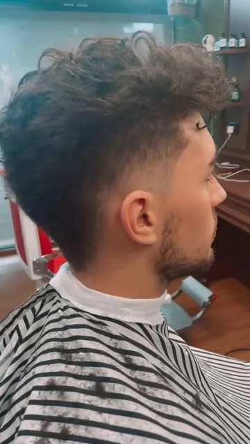
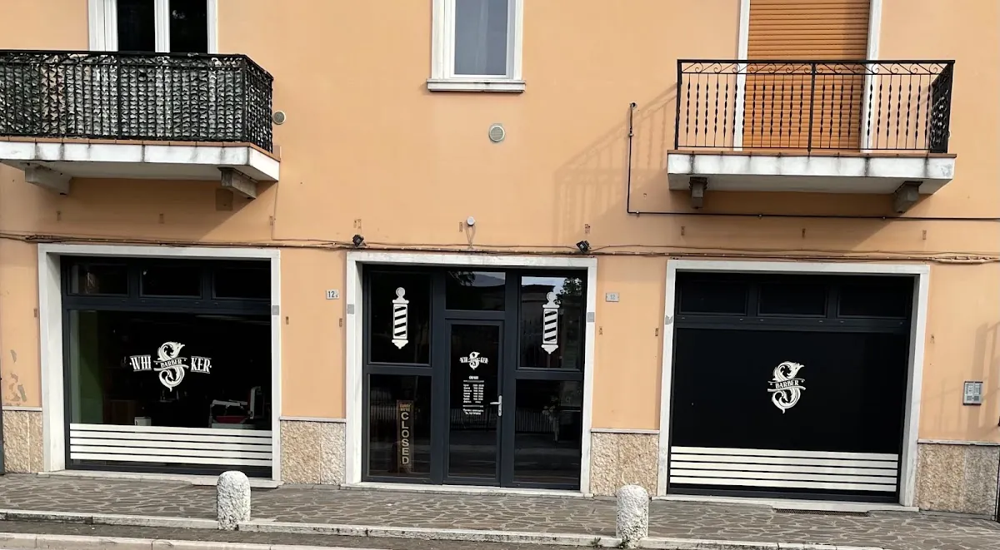

Regala un taglio
In negozio trovi il buono regalo: per un compleanno, per le feste o semplicemente per qualcuno a cui vuoi bene.
Proposta di Insegna per Whisker Barber: non è il sito ufficiale dell'attività
Scorri e la sfumatura sale dalla nuca alle tempie. Poi trascina il cursore e scegli la tua: dicci il nome, al resto pensiamo noi.
Sfumature dalla nuca alle tempie, taper, forbici sul sopra, righe e disegni rasati. Quello che vedi sul nostro Instagram lo facciamo qui, sulla poltrona.
Contorno, lunghezza e una sfumatura che si raccorda con il taglio, così barba e capelli sembrano una cosa sola.
Tutto in una seduta: entri con un appuntamento, esci sistemato da capo a mento.
Prezzi e tempi te li diciamo al telefono, quando fissi l'appuntamento.
In negozio trovi il buono regalo: per un compleanno, per le feste o semplicemente per qualcuno a cui vuoi bene.

Per i bambini c'è la poltrona col cavallino. Il primo taglio sembra meno serio, seduti lì sopra.
Alcuni tagli che abbiamo pubblicato sul nostro profilo. Scorri di lato.









Pareti verde bottiglia, poltrone rosse, mobili in legno e il palo disegnato in vetrina. La trovi in via Cavour 12, a Dossobuono.
L'ingresso e il bagno sono accessibili in sedia a rotelle, e vicino c'è un parcheggio accessibile.
Martedì–venerdì 9:00–19:00, sabato 9:00–18:00.
| Lunedì | Chiuso |
|---|---|
| Martedì | 9:00–19:00 |
| Mercoledì | 9:00–19:00 |
| Giovedì | 9:00–19:00 |
| Venerdì | 9:00–19:00 |
| Sabato | 9:00–18:00 |
| Domenica | Chiuso |
Il palo qui accanto gira quando siamo aperti, come quello vero.